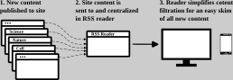
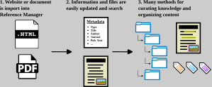
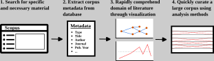
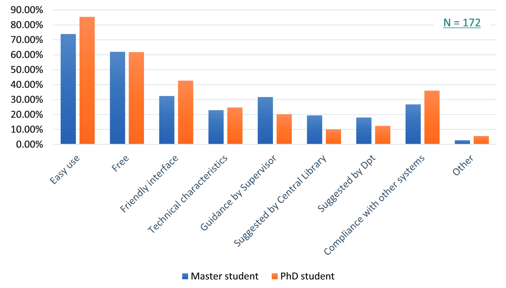
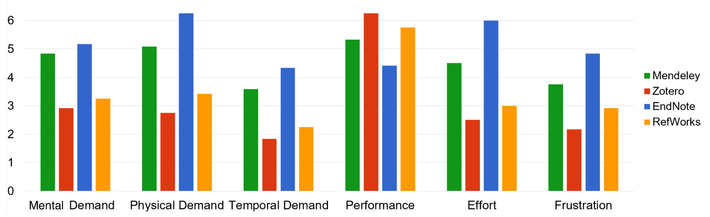
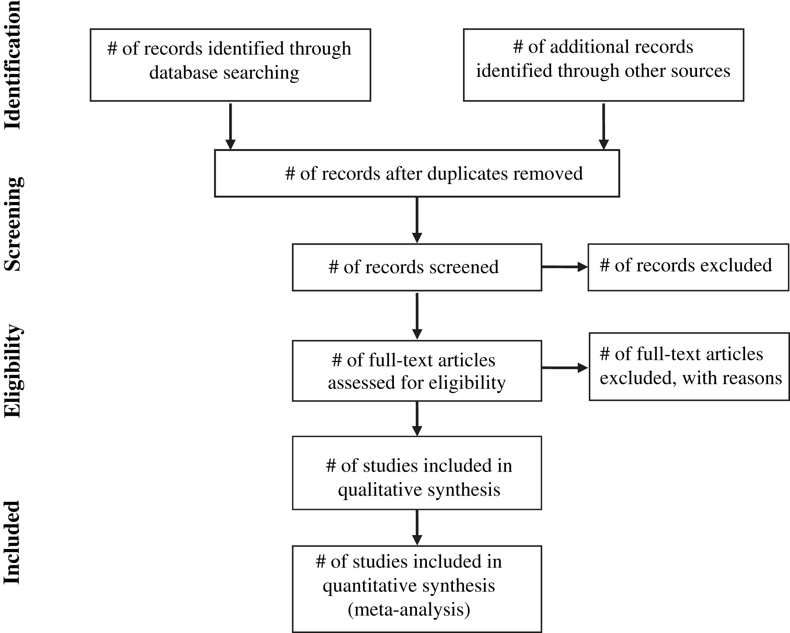
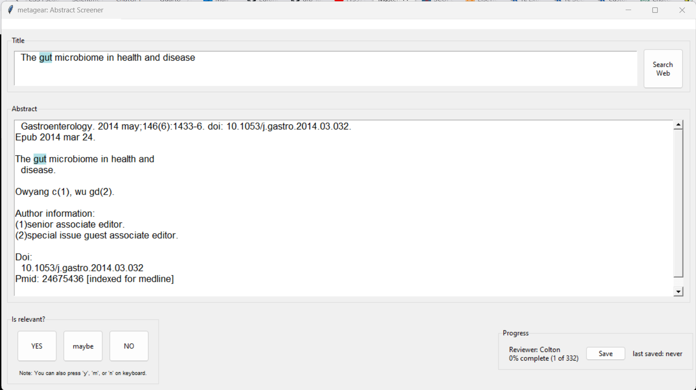

The Modern, Practical Scholar
The quick version!
![]()
Tuesday, the 29th of September, 2026
Big Picture!



A foundation is key to pushing boundaries
Background
Graduate school
- Understand what is known across a domain
- Identify and explain something that is unknown (Preferably, coherently)
- Ultimately, unstructured with many possible options
Improve personal professional care with systematic approaches
Background
Feelings of:
- guilt
- all-consuming prioritization
- wealth disparity
- depression
- anxiety
- stupidity
- uncertainty and disconnection (I.e. Lost)
- urgency and pressure (I.e. time slipping away
- regret
- stress
- isolation
Solutions?
- grin and bear it
- too general to fully address the scope

Centralizing Literature
RSS is a web-based aggregation tool
Background
What does RSS stand for?
- Conflicting accounts!
- Really Simple Syndication
- Rich Site Summary
- RDF Site Summary
- RSS \(\equiv\) a website feed aggregator
- Conflicting accounts!
What is RSS though?
- Set of technical standards
- A standard, computer-readable format
- Written in extensible mark-up language (XML)
- For storing and sending data through the internet
- Set of technical standards
An updating scientific journal website aggregation system!
An RSS aggregator will centralize all feeds across devices
Background
The day an important article is published you will be able to find it!
- Single concentrated reference point
- Track many different websites
- Regular updates (~1-6hrs)
- Convenient
- Desktop
- Mobile
- Tablet
- Browser
Too many software options!!!
Background
There are dozens of notable RSS readers.
Most have a pay-tiered system.
I suggest Inoreader… currently
- Most useful options at unpaid subscription level are:
- Compatible with IOS, Andriod, and the Web
- Organizing with folders and tags
- Highlighting keywords
- Ability to search
- Most useful options at unpaid subscription level are:
Install and Set Up
- Install Inoreader
- Find academic journal feeds
- Organize feeds
Create an account
Install and Set Up
- Go to Inoreader

Create an account
Install and Set Up
- Go to Inoreader
- Select
Create account

Create an account
Install and Set Up
- Go to Inoreader
- Select
Create account - Fill in email and password
- Select
Create account

Optionally, download the mobile app
Install and Set Up
- Benefits
- Portability
- Interoperability
- Make doom scrolling productive
Click your system below:

Optionally, install a browser extension
Install and Set Up
- Benefits
- Portability
- Interoperability
- Make doom scrolling productive
Click your system below:
Quick guide to curate feeds in Inoreader
Install and Set Up
- Select
Add new

Quick guide to curate feeds in Inoreader
Install and Set Up
- Select
Add new - Search a topic, website, or journal

Quick guide to curate feeds in Inoreader
Install and Set Up
- Select
Add new - Search a topic, website, or journal
- Select
Followfrom the feed suggestions

Gather feeds to fit your research interests
Install and Set Up
Journal options
- Wiki of Academic Journals
- Wiki of Scientific Journals
- Scopus Journals
- The NIH Library of Journals
- ChatGPT: “what are the best journals for [bioinformatics] research?”
- Find RSS Links on a Website Supp.
Organize feeds by creating folders
Install and Set Up
Create new folder
- Select 📁 icon

Organize feeds by creating folders
Install and Set Up
Create new folder
- Select 📁 icon
- Write
Folder name

Organize feeds by creating folders
Install and Set Up
Create new folder
- Select 📁 icon
- Write
Folder name - Begin searching for feeds

Organize feeds by creating folders
Install and Set Up
Create new folder
Organize feeds by adding to existing folders
Install and Set Up
Add to existing
Organize feeds by adding to existing folders
Install and Set Up
Add to existing
- Select ⚙️ icon
- Select folders dropdown

Organize feeds by adding to existing folders
Install and Set Up
Add to existing
- Select ⚙️
- Select folders dropdown
- Select
Without folder

Organize feeds by adding to existing folders
Install and Set Up
Add to existing
- Select ⚙️
- Select folders dropdown
- Select
Without folder - Select feeds

Organize feeds by adding to existing folders
Install and Set Up
Add to existing
Make your folders for your feeds
Install and Set Up
Consider grouping journals categories:
- Broad
- interdisciplinary, high-impact factor
- Topics
- Molecular Biology, Genetics, Bioinformatics
- Time span they publish or you want to check
- Continuous, Weekly, Monthly, Quarterly, Annually
- “Nature is a weekly international journal”
- Access
- Open access, Publisher, Preprints
- Broad
Suggested Usage
- The functionality of Inoreader
- Highlighting keywords
- Tagging system
- Rapid navigation
- Search the feeds
Highlighting keywords for efficient literature discovery
Suggested Usage
Assign color to keywords
- Trouble? Try GenAI for a list:
- What are keywords for [microbial metagenomic metabolomic metabolite cancer] research?
- Please expand this list further. (Generic or with direction…)
Tags articles to organize and recall
Suggested Usage
Library
- Tag with keywords like:
- Topics: ProjectName, QE, Grant
- Content: Video, peer, opinion, review
- Resources: Github, scripts, references
- Priority: High, medium, low
Navigating literature blazingly fast with keybindings
Suggested Usage
h or ? for keybindings
Navigating literature blazingly fast with keybindings
Suggested Usage
Below are some suggestions to speed-up your usage:
n,por withshift: navigate the articles or side-barj,k: navigate the Article view orspace: to scroll through the abstractm,f: mark the articles as read or read later1,3: change views from list to cards- use
vto load a new tab orwto load the content
Search the feeds for rapid re/discovery
Suggested Usage
Located at:
- Upper right 🢖 🔍
- Left-hand 🢖 🔍
Add feed🢖Monitor feed
Straight-forward operation:
- Search articles in feeds, folder, or tags
- Use boolean operators
ANDORNOT""()
Break!
Managing Literature
Reference Management Software Lead to Thriving Scholars
Background
- What is RMS?
- Database of bibliographic records
- Creator of bibliographic citations
- Document and knowledge management
- Collection structure
- Tags
- Notetaking
What influences choice?
- Campus educators (library, dept, etc.)
- Teachers and Colleagues
- But, Overall? Exposure!
Scholars Want the Easiest Tool for Reference Management
Background

Scholar needs?
- Easy
- Free
- Friendly
Zotero is Free, Open-source, Community-driven Software
Background

Participant’s ratings of RMS. Cai et al., 2021, p. 68
Zotero [zoh-TAIR-oh] is a free, easy-to-use tool to help you collect, organize, cite, and share your research sources. - Zotero’s quick start guide
Install & Setup
- Download Zotero
- Optimize Zotero Storage
- Extend Zotero for Knowledge Management
Benefits of a web account
Install & Setup
Benefits
- Free 300 mb storage

Benefits of a web account
Install & Setup
Benefits
- Free 300 mb storage
- Access library anywhere with internet
- Syncing and backup across all devices
- Join shared collections with Zotero groups

Create a web account
Install & Setup
- Go to zotero.org

Create a web account
Install & Setup
- Go to zotero.org
- Click
Log In

Create a web account
Install & Setup
- Go to zotero.org
- Click
Log In - Click
Register for a free account

Create a web account
Install & Setup
- Go to zotero.org
- Click
Log In - Click
Register for a free account - Fill out the info

Create a web account
Install & Setup
- Go to zotero.org
- Click
Log In - Click
Register for a free account - Fill out the info
- Click
Register

Download Zotero for your Operating System
Install & Setup
Details
- Mac
- Windows
- Linux
- Chromebook
- Automatically updates

Zotero Connector in browser simplifies storing articles
Install & Setup
Details
- Firefox (Recommended)
- Chrome
- Edge
- Safari

Optionally, download the app
Install & Setup
- Benefits
- Portability
- interoperability
- Gathering and managing on the go
Share🢖Zotero app
Click your operating system below:
Downloading plugins to extend Zotero’s abilities!
Install & Setup
- Download the
.xpifile for the version you want- For Firefox, right-click and
Save Link As...- OR! Set the
Booleanforbrowser.altClickSaveto true atabout:config
- OR! Set the
- For Firefox, right-click and
Install plugins to complete Zotero’s extenstion
Install & Setup
- Open Zotero

Install plugins to complete Zotero’s extenstion
Install & Setup
- Open Zotero
- Select
Tools🢖Plugins

Install plugins to complete Zotero’s extenstion
Install & Setup
- Open Zotero
- Select
Tools🢖Plugins - Select the gear (⚙️) in the top-right corner

Install plugins to complete Zotero’s extenstion
Install & Setup
- Open Zotero
- Select
Tools🢖Plugins - Select the gear (⚙️) in the top-right corner
- Choose
Install Plugins From File…

Install plugins to complete Zotero’s extenstion
Install & Setup
- Open Zotero
- Select
Tools🢖Plugins - Select the gear (⚙️) in the top-right corner
- Choose
Install Plugins From File… - Choose
.xpifiles to install - Select
Open - Select
Install - Restart Zotero
Configure Zotero for well-organized storage
Install & Setup
Go to
Edit🢖Settings- For MacOS, it is
Zotero🢖Settings(?)
- For MacOS, it is
Under
General🢖File Handling


Backing up your storage to the web
Install & Setup
- Under
Account🢖Accountlink your web account- Under
Sync- Uncheck
Sync full-text content
- Uncheck
- Under
File syncing- Check
sync attachment files in my Library using🢖WebDAV - Uncheck
Sync attachment files in group libraries using Zotero storage
- Check
- Under

Setting up free storage
Install & Setup
Koofr + Zotero = 10 GB free cloud storage
ZotMoov allows automated attachment management!
Install & Setup
Directory to Move/Copy Files Toshould be your library directoryFile Behaviorchange toCopy- Set up your directory structure:
- Nested 🢖
{/%y}{/%F}
for~/Year/First_Author
(e.g.~/2014/ZutJ) - Flattened 🢖
/{%y}_{%a}
for~/Year_AuthorLastName
(e.g.~/2014_Zut)
- Nested 🢖

Zotero can become a personal web archive
Install & Setup
- Under
General🢖File Handling

Migrating to Zotero is mostly painless
Install & Setup
Follow the instructions for any popular tool
You can also import from other tools, such as Reference Manager, RefWorks, Papers, Google Scholar Library, ReadCube, etc., by exporting to a standardized reference format, such as RIS, BibTeX, or CSL JSON, and then importing into Zotero by clicking File → “Import…” and choose “A file”.
Suggested Usage
- Organizing in multiple ways
- Efficiently using Zotero
- AI extensions
A simple, standard directory structure is easy to organize
Suggested Usage
- PARA
- Projects
- Short-term efforts
- Areas
- Long-term efforts
- Resources
- Topics of interest
- Archives
- Inactive items from the other categories
- Projects
A simple, standard directory structure is easy to organize
Suggested Usage
- PARA
- Projects
- Short-term efforts
- Areas
- Long-term efforts
- Resources
- Topics of interest
- Archives
- Inactive items from the other categories
- Projects
Many avenues are available for finding you documents
Suggested Usage
To gather attachments:
- Base Zotero
- unpaywall
- retraction watch
- Zotero Connector
- Database query 🢖 Click 📁
- Load article or webpage 🢖 Left or Right click item icon
- Bypass paywalls
Including headers can increase note organization
Suggested Usage
Including the Notes column for quick reference:
- Right-click column headers in any collection
- Check
Notes
Quick example of note taking and importing into text editor:
- Open pdf in Zotero
- Create annotations (
Alt+1&Alt+3) - Right-click item and
Add Note from Annotations - Open text editor
- Import note
Tags are incredible for organizing with visual aids!
Suggested Usage
Use tags to mark all read and unread items:
- Add ⭕ to an item in the
Tagspanel. - In the lower left panel, right click the tag 🢖
Assign Color... - Select a color and
Set color - Select all items and drop into the tag
For automatic tagging, install the Actions and Tags addon
For increased resolution create a Folksonomy, a thesaurus of tags
Suggested Usage
Why?
- Individuals or groups will quickly find and re-find sources
- Metadata is shared in groups
- Offers guidance to beginners
How?
- Think and create some keywords that capture the text contents
- Skim abstracts and papers for keywords
- Use bibliometrics or LLMs:
Create a folksonomy, or a thesaurus of tags, for [topics] studies.
Auto-Curate your library through saved searches
Suggested Usage
- Start an advanced search:
- Click the 🔍
- Click
Edit🢖Advanced Search Ctrl+Shift+F
- Define an area of continued interest
- Using keywords in
All fields, rapidly tag groups of items
Citing and bibliographies are simplified
Suggested Usage
- Google Docs for collabratory documents
- Open google doc: Open a google doc in the google drive you would like to sync to your Zotero library.
- Link account: Integrate your google account with Zotero by clicking
Zin the toolbar.- Authenticate the Google account used to edit the document
- Microsoft Word for local documents
- Open Word Doc: Open a word document…
- Done?: There is now a Zotero tab in you document linked to your library!
- Libre Office for local documents
- Open Libre Writer: Open a writer document…
- Done?: There is now a Zotero toolbar in you document linked to your library!
Extend your capabilities with addons and external tools
Suggested Usage
Additional addons:
Integrated external tools:
External tools:
Break!
Analyzing Literature
Bibliometrics provides an accessible framework for equitable scholarship
Background
Bibliometrics uses
- Archival database
- Article metadata
- Statistical analysis
Bibliometrics answers
- where the field has grown from
- its most relevant articles
- its emerging topics
Bibliometrics yields networks based on references
Background
Bibliometrics can rapidly build your compentence in a domain
Bibliometrics can expose you to the techniques of a domain
Minimize your time confused with bibliometrics
Background
- General bibliometric science yields:
- A solid foundation of the necessary concepts
- The questions answered by the field
- Some open areas of discovery within the field
- My proposed use of a bibliometric framework
- Use reproducible methods
- for systematic evaluation
- in a quantifiable way!
- Ultimately, ending with justifiable literature for your needs
Databases
- Basics of literature search
- Which databases to use
- Searching techniques
- Sample size
- Exporting search metadata
- Filtration techniques
Your database choice will affect your results
Databases
Databases focus on different levels of content selection, curation, and comprehensiveness.
- Web of Science (WoS)
- Scopus
- PubMed
- Dimensions
- CrossRef
- Semantic Scholar
- Microsoft Academic
- Lens.org
- Cochran Library
- Google Scholar
“Scopus and WoS compliment each others as neither resource is all inclusive”
Your database choice will affect your results
Databases
Databases focus on different levels of content selection, curation, and comprehensiveness.
- Web of Science (WoS)
- Scopus
- PubMed
- Dimensions
- CrossRef
- Semantic Scholar
- Microsoft Academic
- Lens.org
- Cochran Library
- Google Scholar
“Scopus and WOS compliment each others as neither resource is all inclusive”
Signing up, search and exporting can be nuianced
Databases
- Register with university email for Scopus and WoS access when off university wifi/library VPN
- PubMed does not require registration at all
- Scopus (Multidisciplinary)
- 82.4 million records
- 1788 – present
- bibtex
- full record
- 20,000 export limit
- Scopus (Multidisciplinary)
- WoS (Multidisciplinary)
- Core, 79 million
- 1900 - present
- plaintext or bibtex
- custom selection
- 1000 export limit
- WoS (Multidisciplinary)
- PubMed (Only life science and biomedical)
- 35 million
- 1966 - present (*1809)
- plaintext
- pubmed format
- 10,000 export limit
- PubMed (Only life science and biomedical)
Vocabulary is vital for a good search!
Databases
controlled vocabulary thesaurus
- Medical Subject Headings (MeSH) Tree
- Search “controlled vocabulary thesaurus for [biology]”
Try ChatGPT?
What are keywords for [microbial metagenomic metabolomic metabolite cancer research]?
Create a controlled vocabulary for [microbial metagenomic metabolomic metabolite cancer research].
Wildcards allow the capture of many individual words
Databases
| Wildcard Charater | Definition | Example | Result |
|---|---|---|---|
| * | Any amount of character/s to include zero | *man |
man, woman, human, superman, superwoman, {etc} |
| ? | Any single character | wom?n |
woman, women |
| $ (WoS only) | Any single or no character | $$man |
woman, man, human |
Boolean operators are vital to focus a corpus
Databases
| Operator | Affect on Search | Definition | Example |
|---|---|---|---|
| AND | Narrows | Intersects all terms separated by operator | migration AND butterfl* |
| OR | Broadens | Unites any and all terms separated by operator | migration OR butterfl* |
| NOT | Narrows | Excludes term following operator | migration AND bird* NOT butterfl* |
| NEAR/x(WoS) | Narrows | Find terms joined by operator near each other by \(x\) words | America NEAR/10 butterfly |
| SAME(WoS) | Narrows | Find terms joined by operator if in the same sentence | America SAME butterfly |
| W/n(Scopus) | Narrows | Find terms joined by operator within each other by \(n\) words | American W/10 butterfly |
| Pre/n(Scopus) | Narrows | Find terms where preceeding term to operator is within \(n\) words of following term | American Pre/3 butterfly |
Searching by phrase may simplify a search
Databases
| Phrase type | Example | Search |
|---|---|---|
| Loose | "phrase searching" |
phrase search, phrase searches, phrase searching |
| Exact(Scopus) | {phrase searching} |
phrase searching |
Combine all search techniques for the best corpus results
Databases
WoS = 184
ALL=((“colorectal cancer*” OR “colorectal neoplas*” OR “adenomatous polyposis coli” OR “colon* neoplas*” OR “rectal neoplas*” OR “hereditary nonpolypo*”) AND (“metagenom*” AND “metabol*”))
Scopus = 367 & PubMed = 248
TITLE-ABS-KEY ( “colorectal cancer*” OR “colorectal neoplas*” OR “adenomatous polyposis coli” OR “colon* neoplas*” OR “rectal neoplas*” OR “hereditary nonpolypo*” AND “metagenom*” AND “metabol*” )
Combine all search techniques for the best corpus results
Databases
WoS = 184
ALL=((“colorectal cancer*” OR “colorectal neoplas*” OR “adenomatous polyposis coli” OR “colon* neoplas*” OR “rectal neoplas*” OR “hereditary nonpolypo*”) AND (metagenom*” AND “metabol*”))
Scopus = 367 & PubMed = 248
TITLE-ABS-KEY ( “colorectal cancer*” OR “colorectal neoplas*” OR “adenomatous polyposis coli” OR “colon* neoplas*” OR “rectal neoplas*” OR “hereditary nonpolypo*” AND “metagenom*” AND “metabol*” )
Sample Size goals of 500 - 1500 articles
Databases

Results from power simulation, showing power as a function of sample size, with effect sizes shown as different colors, and alpha shown as line type. The standard criterion of 80 percent power is shown by the dotted black line.
Build a corpus for your interests
Databases
| Wildcard Charater | Definition | Example | Result |
|---|---|---|---|
| * | Any amount of character/s to include zero | *man |
man, woman, human, superman, superwoman, {etc} |
| ? | Any single character | wom?n |
woman, women |
| $ (WoS only) | Any single or no character | $$man |
woman, man, human |
| Operator | Affect on Search | Definition | Example |
|---|---|---|---|
| AND | Narrows | Find all terms separated by operator | migration AND butterfl\* |
| OR | Broadens | Find any and all terms separated by operator | migration OR butterfl\* |
| NOT | Narrows | Excludes term following operator | migration AND bird\* NOT butterfl\* |
| NEAR/x(WoS) | Narrows | Find terms joined by operator near each other by \(x\) words | America NEAR/10 butterfly |
| SAME(WoS) | Narrows | Find terms joined by operator if in the same sentence | America SAME butterfly |
| W/n(Scopus) | Narrows | Find terms joined by operator within each other by \(n\) words | American W/10 butterfly |
| Pre/n(Scopus) | Narrows | Find terms where preceeding term to operator is within \(n\) words of following term | American Pre/3 butterfly |
| Phrase type | Example | Search |
|---|---|---|
| Loose | "phrase searching" |
phrase search, phrase searches, phrase searching |
| Exact(Scopus) | {phrase searching} |
phrase searching |
Filtration techniques are whatever work for you
Databases

Literature filtration
- Prisma
Filtration techniques are whatever work for you
Databases

Literature filtration
- Prisma
- 80:20
Filtration techniques are whatever work for you
Databases

Literature filtration
- Prisma
- 80:20
metagear?
Techniques for Success
- Quickly sort articles from feeds
- Time management and blocking
- Achievable Goals
- Boredom
The 80:20 method is ideal to filter papers
Techniques for Success
- 80:20?
- Remove 20% each step
- Remember IMRaD?
- RSS reader focus on Title and Abstract!
f - Import
finto reference manager - “I’D MembeR” better
- RSS reader focus on Title and Abstract!
Mindfully approach time management for best results!
Techniques for Success

- Consider time blocking
- When do you work best?
- 3-2-1 method
Achievable goals lead to accomplishments
Techniques for Success
Achievable goals?
- Atomized tasks
- Focus a task until it is a single operation
- Doesn’t feel comfortable? The task is still too large
- Monotropism
- Be intentional with you tasks
- Reach a flow state in knowledge work
Boredom can lead to creative progress
Technqiues for Success
Ennui/Tedium Slow thought, Processing ideas
- Eliminate distractions
- Boredom or writing
- Sit in the arboretum
- Set regular scheduled limits
- 400 words before editing
- 3-6 hours before task switching
Summary
You have learned:
- RSS and Readers
- The fundamentals of RSS
- The application to use
- Inoreader
- Install Inoreader
- Find academic journal feeds
- Organize feeds
- The functionality of Inoreader
- Skills to rapidly consume literature
- Quickly sort articles from feeds
- Time management and blocking
- Reference management software
- s
- Bibliometric Databases
- Bibliographic databases
- Search engine techniques
- Sampling size
- Exportation and Filtration
Acknowledgments
“I have always imagined that Paradise will be a kind of library.”
Jorge Luis Borges
- C. Titus Brown
- Pamela Reynolds
- Bryshal Moore
- Luiz Irber
- The DataLab
- Professors For The Future
- NSF GRFP
- IMSD

“The next best thing to being wise oneself is to live in a circle of those who are.” 👤 C.S. Lewis
- C. Titus Brown
- Pamela Reynolds
- Bryshal Moore
- Luiz Irber
- The DataLab
- Professors For The Future
- NSF GRFP
- IMSD
Supplementary
Sync attachments across computers with google drive
Install & Setup - Supp.
- Download and install Drive for Desktop
- Skip everything
- Go to your
zotero-librarydirectory - Right-click 🢖
Sync or Backup this folder - Only check
Sync with Google Drive- Should now be synced under
Computersin google drive
- Should now be synced under
- In secondary computer,
- Download, install, and sync Drive for Desktop
- Allow
Offline accesstozotero-libraryfor local storage - Repeat the Install & Setup section of this presentation to create the same Zotero system on this new computer - BUT! Replace the
zotero-librarypath with the Google Drivezotero-librarypath (Slide: Zotfile is for automated attachment management, Step 2)
Fixing file locations quickly
Install & Setup - Supp.
If your attachments are not all being moved by ZotMoov:
- Go to
My Library - Organize by
Attachments📎 - Click on the webpage icon to the left of the title
- Select all items (
Ctrl+A) - Right click 🢖
Manage attachments🢖Rename and Move
Better BibTeX supports markdown bibliographies
Install & Setup - Supp.
- Select
Edit🢖Preferences - Under
Better BibTeX🢖Open Better BibTeX preferences... - Set
Citation key formula- I suggest
auth.lower + year + shorttitle(3,3) + journal.lower.abbr
- I suggest
- When citing, add
@before the citation key per item cited.
Finding the RSS link to a website
Click Here to Go Back to Gathering Feeds
- RSS Validator
- Navigate to the website:
- Right click page
- Select
Page Source - Press
ctrl+forcmd+f - Type
rss
- No RSS found?
Data Intensive Biology Lab